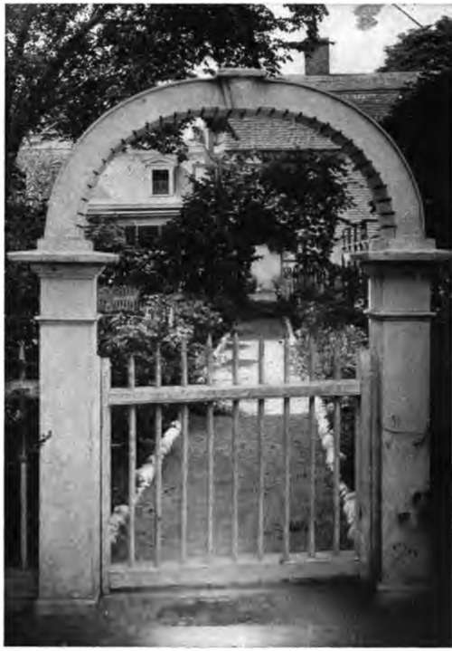

Spring Work In The Garden. Continued
Description
This section is from the book "Flower Gardening", by H. S. Adams. Also available from Amazon: Flower gardening.
Spring Work In The Garden. Continued
When April, say, is half over remove the last of the litter, if it is not to remain to be worked in. Use the left hand, and a basket, for this, and, with a two-tined steel table fork or the point of a narrow trowel held in the right hand, stir the soil gently around the crowns of plants and between— if you are sure that everything is above ground or so far below that cultivation will not be hazardous. At the same time, pull up any weeds that have got a start—some will have survived the winter— and destroy, or remove to a nursery row, all seedling plants that are out of place. Make a note, too, of plants that require division or transfer to a more favorable location.
Early cultivation of the soil is among the most important of April operations. It not only en courages growth, but weeds then will not get ahead of you. Use a hoe wherever possible; it saves a lot of time and is more effective. Cultivation may begin as soon as the soil is dry enough to be easily worked.
Wherever the bed or border is next to a grass plot, straighten the edge of the turf. Use a sharp spade and a line if a turf cutter is not available. After shaking off some of the soil, throw the clods of turf into a wheelbarrow and make a new com-post heap or extend the old one.
A simple way to start a compost heap is to lay out a square or rectangle in a place remote from the house and yet not inconvenient of access, by placing on the ground clods of turf, with the grass side down, something after the manner of a foundation. If there is enough turf for walls a foot or more high and a flooring as well, so much the better. Throw into this kitchen refuse, lawn clippings and any easily rotted garden waste that does not contain weed or grass seeds; burn these. Cover lightly with earth any decaying matter that attracts flies. By the following spring the pile will be valuable fertilizer.
Before April is past much of the transplanting is out of the way if time be taken by the forelock. Hybrid perpetuate, old-fashioned bush roses, climbing roses and flowering shrubs are best moved when the leaf buds have not begun to expand and the transplanting should therefore be done early in April; even late in March if the ground is ready.
Aside from spring-blooming bulbs, lilies, peonies and bleeding heart, hardy plants are shifted in the latter part of April and early in May to rather better advantage than in the autumn, though there is no rule save convenience and the exigencies of the case.
If note of what is to be moved has not been made already, look over the garden with pencil and paper in hand and get a line on things. Before digging you are supposed to have some idea of what sort of a root growth a plant has, that you may favor it as much as possible. Excepting with tap roots there is no special risk if most of the soil falls away but it is safer to have a good ball of earth, which is not difficult in spring when there is plenty of moisture to hold it together. The ball is less likely to split if the trowel, or spade, is pressed deep into the soil on one or two sides and withdrawn, the actual lifting being then done from a third side. When a very large plant or shrub is to be handled, first prepare the new hole. Then it may be carried there on the spade that has lifted it and there is less likelihood of the ball of earth splitting. If the distance is far, lay the burden, spade and all, on a wheelbarrow and look out for rough places in transit.
When you can do so, choose for transplanting a day when the sky is overcast or when you have an idea that rain will be along soon. Then, perhaps, you will be able to do away with the trouble of watering. As the plants are dug lay them carefully in a basket *or wheelbarrow and protect from the hot sun; the roots dry very quickly. As a rule, take up only what can be replanted before nightfall; any held over may be placed in the barn or cellar after being sprinkled lightly. Put all plants that are not required for the garden scheme in rows in a nursery bed, dividing them into as many parts as you can. They will be useful there in three ways—for increase of stock, gifts to friends and bouquet flowers. The greater part of the spring flowers may be lifted with safety even after they have begun to bloom; give them plenty of water.
Plant always in a hole deep enough and wide enough to a little more than take the ball of earth that holds the roots. If the bottom of the hole is hard, loosen it with the point of the trowel or spade. Where the ground is dry fill the hole with water and let this soak in thoroughly. Then sprinkle the bottom with a little soil and set the plant down, steadying it with the left hand to keep it upright and filling in with the other until it stands alone. As the remainder of the soil is filled in, press it down with the hands or feet. Unless there is a drought, a second watering will probably not be necessary, but the plants must be watched until the next rainfall.
Many flower seeds cannot be sown outdoors with safety until late in May, when, as the seedsmen say on their little packets, "danger from frost is over." April therefore ought to find a coldframe getting a start of the season, provided that autumn forethought did not make one ready the year before. This can be purchased, knocked apart, or with some narrow boards and one or more window sash it is a matter of little time to put one together at home. Plant in it in April or very early in May seeds of annuals for blooming ahead of those sown in the open ground; also seeds of perennials, for years to come. Sow the seed in rows and at the head of each place a number on the inside of the frame, this to correspond with a list giving the name opposite each number.
"The peculiar advantages of the double border are the creation of delightful vistas and the greater enjoyment of a stroll where attention is not confined to one side".
Seed is always "bad" whenever it fails to come up. The truth is that seed from a reliable source is good, but very frequently the planting is bad. Whether in a coldframe or in the open ground first see that the soil is loose and quite free from lumps and grit, adding a little sand if not light enough. Press the soil down with a small piece of board to get a smooth surface. Scatter the very finest seed, such as that of the poppy, broadcast on the surface and sift a very little soil over it. Sow larger seeds in rows, made with a sharp-pointed stick, the depth being about twice the diameter of the seed. Pour the seed into the palm of the left hand and drop it with the thumb and finger of the right. Or, if done adroitly, the dropping may be done through a small hole made in one corner of the seed envelope. Plant very large seeds one by one and an inch or so apart in the row, to avoid the labor of thinning out.
After the sowing in rows, fill in with soil and then—in broadcast sowing as well—press firmly and evenly with a bit of board. Cut a piece of white cotton cloth large enough to fit the surface of the soil, lay it down smoothly and do all the watering, with a sprinkler, through this until the plants begin to show above ground.
If the stand is good, thin out rigidly. When the first two true leaves appear thin out the weaker ones or, if a large stock is wanted, transplant to another frame. Seedlings that are so close together as not to be easily separated by dividing the soil with a small trowel or knife may be lifted in clumps and dropped into a shallow pan of water. There the soil is turned to mud and the seedlings will pull out with no injury to the rootlets.
At the end of May the annuals will be large enough to move to their permanent place in the garden, either by themselves or as fillers among hardy plants. The perennials may remain in the frames, to grow on, until summer, autumn or the following spring.
May weeding is the salvation of summer, when garden work is less invigorating. Go over the garden carefully and between times pull up every weed within easy reach as you walk about. Loosen with a trowel any weed or bit of grass that does not yield at once, so that no roots may be left behind. In May also dirt walks will need hoeing and lawn edges of borders another very careful clipp ing.
In the latter part of the month, after a rain, sift some powdered hellebore over the roses to ward off insect ravages.
Continue to: